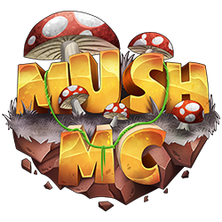

MushMC
Nome completo:
MushMC
IP do servidor:
mushmc.com.br
STAFF's
- feijaoo
- Nicolas
- Feelipe
- Anjeel
- yPandinho
- Faasty
- gringo
- Axtta
- Kiinzaay
- saqyz
- neexty
- gustavo
- luis50
- paiva
- DanteBR
- YusukeFL
Descrição
MushMC é um servidor brasileiro de Minecraft focado em diversão e competitividade. Com modos variados e uma comunidade ativa, o servidor oferece desde PvP clássico até minigames estratégicos. Os jogadores podem explorar mapas customizados, participar de eventos especiais e testar suas habilidades contra outros participantes. Ideal para quem gosta de partidas rápidas, desafios intensos e interação com a comunidade.